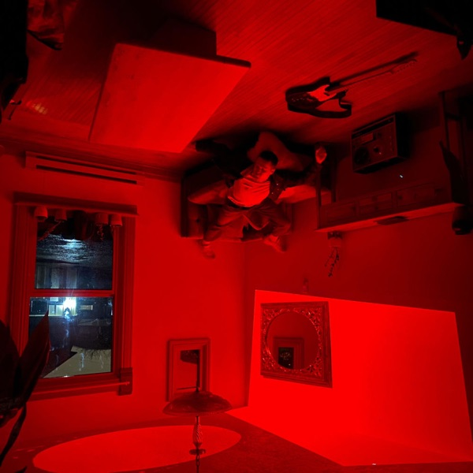

Sync pitch for Rhymez · November 2026
Two alternative pop songs for Rhymez
Denial brings cinematic speed to the Modern R&B series, while So Delighted When She Speaks brings grunge and gothic romance to the Artist Series.
RYLAND controls 100% of the master and the publishing.
-

Denial Love · fast driving · cinematic1:54 -
 So Delighted When She Speaks Vampire film · gothic · grunge3:14
So Delighted When She Speaks Vampire film · gothic · grunge3:14

Denial
Barely making rent on Guitar Center’s noon shift, he sees the off-and-on girl from his gym with another guy and wishes he could speed up to the future he feels coming.
For Modern R&B: cinematic speed from a broke, off-and-on love story.
- Mood
- Cinematic, fast and fun
- Best for
- Love scenes
- Fast driving sequences
- Cinematic scenes
- Energy
- Fun production. Strongest moment: 1:21.
- Themes
- Off-and-on love, feeling not enough, belief in his future. Chapter 1 of one relationship, continued in looking for you and everlasting.
- Lyrics
- CleanNames a car brand (Mercedes).
- Vocal
- Male lead vocal
- Credits
- Written and produced by RYLAND
- Genres
- Alternative pop, alternative R&B
- ISRC
- QZES62318367
Show lyricsHide lyrics
Might not have much money baby But I gotta heart that'll beat for two Got no new twenty three Mercedes Gotta nine to five and it starts at noon If you could only wait awhile I could make it worth your while Loving him in denial Loving him in denial If you could only wait awhile I could make it worth your while
Might not have much money baby But I gotta heart that'll beat for two Got no new twenty three Mercedes Gotta nine to five and it starts at noon If you could only wait awhile I could make it worth your while Loving him in denial Loving him in denial If you could only wait awhile I could make it worth your while Loving him in denial Loving him in denial
If you could only wait awhile I could make it worth your while Loving him in denial Loving him in denial
So Delighted When She Speaks
A few hours with her made him understand the stories of Rome going to war for love: a city destroyed to win back that feeling.
For Artist Series: a vampire film closing scene and end credits.
- Mood
- Grunge and momentous
- Best for
- Vampire film closing scene
- Vampire film end credits
- Gothic dark romance
- Energy
- Strongest moment: 2:20.
- Themes
- Wanting one more night. Two sides of one meeting: Tough imagines the night that never happened.
- Lyrics
- CleanA metaphor: crumbling walls, a baby screaming, “blood is flowing”, a city destroyed to win someone back. No strong words.
- Vocal
- Male lead vocal
- Credits
- Written and produced by RYLAND
- Genres
- Alternative pop, indie pop
- ISRC
- QZNWQ2573514
Show lyricsHide lyrics
Crumbling walls Baby's screaming Blood is flowing No one else around
There's nothing standing Just pretending I didn't do it all
Just have one more night Just to look in your eyes
So delighted when she speaks Cause nothing touches me lately And I fall onto my knees If you want it you can have it There ain't nothing at all
Oh-oh-oh-oh-oh-oh-oh-oh-oh
Crumbling walls Baby's screaming Blood is flowing No one else around
There's nothing standing Just pretending I didn't do it all
So delighted when she speaks Cause nothing touches me lately And I fall onto my knees If you want it you can have it There ain't nothing at all
Oh-oh-oh-oh-oh-oh-oh-oh-oh Oh-oh-oh-oh-oh-oh-oh-oh-oh
Clearance and files
- Clearance
- One-stop: RYLAND controls 100% of the master and the publishing.
- Master
- RYLAND (Ryland Scott Adams), 100%
- Writer
- Ryland Scott Adams, 100%, BMI, IPI 01377555214
- Publishing admin
- DistroKid Publishing for Denial and So Delighted When She Speaks
- Label
- Independent
- Released
- 2023 and 2025
Both songs are released singles under RYLAND’s own name.
| Song | Full mix MP3 | Full-length WAV | Instrumental | Stems | Clean |
|---|---|---|---|---|---|
| DenialQZES62318367 | On request | On request | On request | On request | Not needed |
| So Delighted When She SpeaksQZNWQ2573514 | On request | On request | On request | On request | Not needed |
Full-length WAVs, instrumentals and stems on request.

About RYLAND
RYLAND makes alternative pop in Portland, Oregon, making songs that strike him deep, songs he’s in awe of. He writes, plays, sings, records and produces his own music, whatever gets the feeling across. On “*Showing Friends”, each song is titled with the date it was made.
From Portland, Oregon · Independent · BMI writer